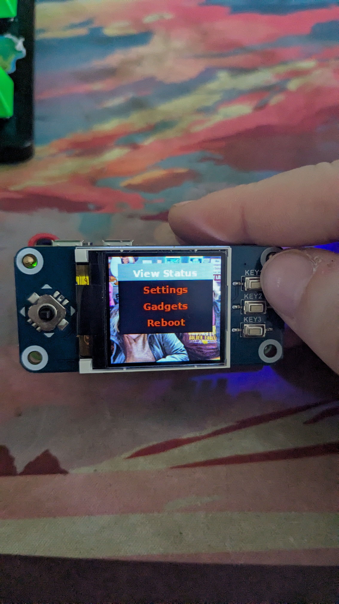

Welcome to my portfolio! Here you can view all my projects and planned work. Most of my projects involve Raspberry Pi's due to my current interest in them and with how versatile they are for various tech experiments.
1. Agricultural Soil Sensor
Description: Measures soil temperature, moisture, Nitrogen, Phosphorus, and Potassium levels to measure soil health. It uses a Raspberry Pi Zero 2 W to receive data packets through LoRa communication from various soil sensors, it then puts that data into a database for analysis and querying to be sent to a web interface.
Prototype Image:

I used a bare metal SX1262 Lora Module Pi Hat that acts as the gateway and receives the data, while the ESP32-S3 with a LoRa extention board collects temperature and moisture readings from the b280 sensor as an example instead of using an industrial soil sensor. I'm in the works on making a full fledged industrial level soil sensor system.
2. Raspberry Pi Gadget Switcher
Description: A Raspberry Pi-based switcher that allows you to control various gadget modes that the Raspberry Pi is connected to. It provides an interface to easily switch between different modes like HID-gadget, mass storage, ethernet gadget, serial gadget, and more.
Prototype Image:
